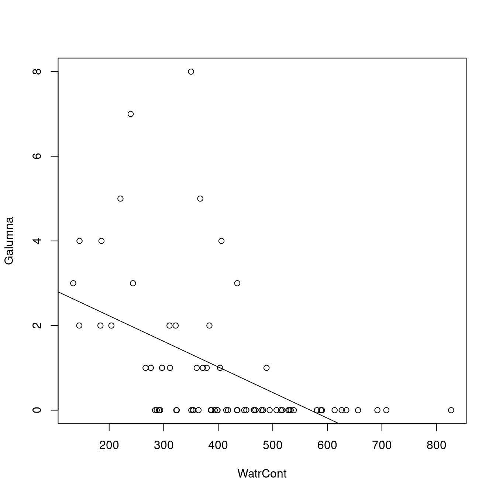
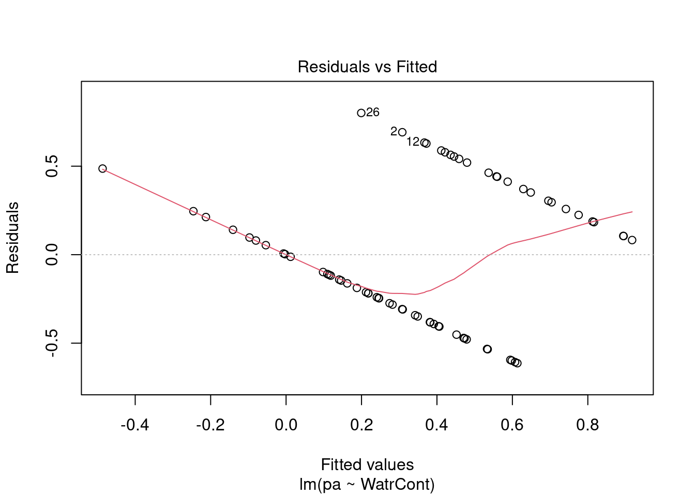
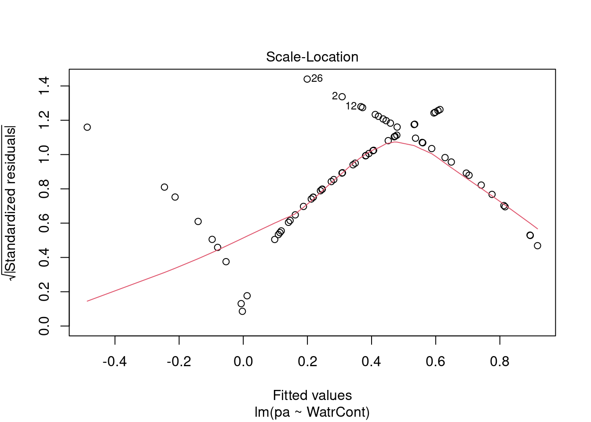

Chapitre 5 Les conditions d’application d’un modèle linéaire
Validons nos modèles pour s’assurer qu’ils suivent les conditions d’application des modèles linéaires, en commençant avec le modèle d’abondance.
# Plot the abundance model
plot(Galumna ~ WatrCont, data = mites)
abline(lm.abund)
Le modèle ne suit pas bien les données observées. Il prédit une abondance négative lorsque WatrCont dépasse 600, ce qui n’est pas réaliste pour notre jeu de données qui ne peut pas avoir de données négatives. Le modèle performe aussi très mal quand il en vient à prédire les valeurs d’abondance à hautes valeurs de WatrCont.
Examinons les graphiques de diagnostique:
# Diagnostic plots
plot(lm.abund)


Les graphiques montre que le modèle viole les conditions d’homogénéité de la variance. En effet, le graphique en haut à gauche montre que les résidus sont plus larges lorsque les valeurs prédites sont élevés. Le modèle ne suit pas non plus la conditons de normalité; le graphique en haut à droite indique que les résidus ne suivre pas une courbe normale aux extrémités et beaucoup de points sont très éloignés de la valeur prédite (ligne pointillée).
Nous devons rejeter ce modèle et ne pouvons conclure quoi que ce soit sur l’abondace de Galumma selon le contenu en eau.
Nous pouvons regarder les graphiques de diagnostique du modèle de fréquence relative et de présence-absence, mais nous observons des problèmes similaires:
# Plot the proportion model
plot(prop ~ WatrCont, data = mites)
abline(lm.prop)
# Diagnostic plots
plot(lm.prop)


# Plot the presence/absence model
plot(pa ~ WatrCont, data = mites)
abline(lm.pa)
# Diagnostic plots
plot(lm.pa)
Reculons un peu et révisons les conditions d’application des modèles linéaires pour mieux comprendre d’où viennent ces suppositions. Cette équation est:
\[Y_i = \beta_0 + \beta_1X_i + \varepsilon\]
La dernière variable \(\varepsilon_i\) est très importante. C’est de là que les conditions d’application du modèle prennent origine. Pour les modèles linéaires, les résidus \(\varepsilon_i\) (la distance entre une observation et la droite de régression) peuvent être prédits en dessinant une variable aléatoire provenant d’une distribution normale.
Rappelez-vous que les distributions normales ont deux paramètres: \(\mu\) (la moyenne de la distribution) et \(\sigma^2\) (la variance de la distribution). Pour un modèle linéaire, \(\mu\) change selon la valeur de \(X\) (variable prédictrice), mais \(\sigma^2\) a la même valeurs pour toutes les valeurs de \(Y\). Notre modèle linéaire simple peut aussi être écrit de cette façon:
\[Y_i \sim N(\mu = \beta_0 + \beta_1 X_i +\varepsilon, \sigma^2)\]
où \(N(\cdot)\) indique que \(Y_i\) provient d’une distribution normale avec le paramètre \(\mu\) (moyenne; qui dépend de \(x_i\)) et \(\sigma\) (variance; qui a la même valeur pour toutes les valeurs de \(Y_i\)).
Qu’arrive-t-il si on fait varier les valeurs de \(\mu\) et \(\sigma\).
En faisant varier \(\mu\) alors \(\sigma = 5\) fait changer la moyenen de la distribution.

Si nous gardons \(\mu = 25\), en faisant varier \(\sigma\) , la forme e la distribution change, où un petit \(\sigma\) (variance basse) indique que la probabilité est plus élevé autour de la moyenne, alors qu’un \(\sigma\) élevé diffuse la probabilité à traver l’étendue des données.
5.1 Prédiction du modèle
Lorsque les conditions d’application du modèle linéairene sont pas rencontrées, les prédiction du modèle deviennent problématiques. Regardons un exemple pour démontrer les problèmes associés avec un modèle mal estimé.
Rappel: nous voulons estimer les coefficients inconnus \(\beta_0\) et \(\beta_1\), pour tracer une ligne droite qui prédit chaque valeur de \(Y\) en fonction de \(X\)!
\[Y_i \sim N(\mu = \beta_0 + \beta_1 X_i +\varepsilon, \sigma^2)\]
Prédisons l’abondance de Galumna pour un contenu en eau = 300 avec notre modèle linéaire général. Quels sont les paramètres de la distribution normale utilisée pour modéliser \(Y\) quand le contenu en eau est \(300\)?
Nous commençons par obtenir les valeurs de \(\mu\) and \(\sigma^2\) pour une distribution correspondant à notre modèle. Pour obtenir les coefficient de nos modèles, on peut utiliser la fonction coef():
# Extract model coefficients
coef(lm.abund)## (Intercept) WatrCont
## 3.439348672 -0.006044788Ces coéfficients nous permettrais de prédire l’abondance de Galumna s’il n’y avait pas d’erreur. Cepenant, nous savons que l’erreur est irrévocable pour notre modèle. Pour avoir nos valeurs prédites, nous avons donc besoin d’ajouter . C’est ici que nous utilisons la distribution normale! Pour \(X\) = 300, notre modèle prédit que devrait suivre une distribution normale avec une moyenne = 1.63. Nous pouvons extraire la variance (\(\sigma^2\)) avec le sommaire du modèle:
# Extract variance from the model summary
summary(lm.abund)$sigma## [1] 1.513531Nous pouvons intégrer ces valeurs avec l’équation du modèle: \[Y_i \sim N(\mu = \beta_0 + \beta_1 X_i +\varepsilon, \sigma^2)\] \(\mu = 3.44 + (-0.006 \times 300) = 1.63\)
\(\sigma^2 = 1.51\)
Ceci nous indique que des valeurs de \(Y\) générées aléatoirement lorsque le contenu en eau = \(300\) devrait être \(1.63\) en moeynne et avoir un variance de \(1.51\). À \(x = 300\), résidus devrait suivre une distribution normale avec \(\mu = 1.63\) et \(\sigma^2 = 1.51\). À \(x = 400\), nous avons \(\mu = 1.02\) et \(\sigma^2 = 1.51\), etc.
Lorsque le contenu en eau = 400, résidus devrait suivre une distribution normale dont les paramètres \(\mu = 3.44 + (-0.006 x 400) = 1.02\) et \(\sigma^2 = 1.51\), etc. Chaque valeur de \(Y\) est modélisé selon une distribution normale avec une moyenne qui dépend de \(X_i\), mais avec la variance qui est constante \(\sigma^2 = 1.51\) pour toutes les valeurs de \(X_i\). Sur un graphique, cela ressemblerait à:

Les quatre distributions normales (en orange) sur ce graphique représentent la probabilité d’observer une valeur d’abondance de Galumna donnée pour quatre valeurs différentes de contenu en eau. La moyenne de la distribution normale varie selon une fonction du contenu en eau (donc \(\mu\) diminue avec le contenu en eau), mais \(\sigma^2\) est toujorus = 1.51 (i.e. la variance est homogène pour toutes les valeurs de \(X\)).
Ce modèle est innaproprié pour au moins deux raisons:
1. Les valeurs sont en moyenne, plus éloignée de la pente à une valeur de X basse qu’à une valeur de X élevée, ce qui indique que la variance (σ2) n’est pas homogène. Il y a plus de variance résiduelle autour des valeurs prédites à une valeurs basse de \(X\), d’une façon que \(\varepsilon\) varie en fonction de \(X\), et ainsi violant la condition de l’homoscédasticité. Ce n’est pas réaliste d’utiliser une valeur de \(\sigma^2\) constante: la distribution normale utilisée pour prédire \(Y\) à de faibles valeurs de \(X\) devrait idéalement être plus large (une variance \(\sigma^2\) plus large) que la distribution normale utilisée pour prédire \(Y\) pour de grandes valeurs de \(X\), mais le modèle linéaire ne permet pas cela.
2. Les résidus ne suivent pas une distribution normale avec une variance constante pour toutes les valeurs de \(X\). La distribution de la variance des résidus changent selon une fonction de \(X\) (observer l’étendue des données aoutut de la ligne de tendance!).
3. Les valeurs prédites ne font pas de sens, selon les observations données. Notre variable réponse est l’abondance, qui est une variable discrète. Pourtant, pour un contenu en eau = 300, la valeur d’abondance que notre modèle prédit comme étant la plus probable d’observer est 1.63! Nous savons que la probabilité d’observer 1.63 individuals pour une contenu en eau = 300 est actuellement de 0, puisque la probabilité d’observer n’importe quelle fraction (non-discrète) est impossible. Nos valeurs prédites devraient être modélisées en utilisant une distribution qui prédit seulement avec des variables discrètes, plutôt que continus. Ceci est un problème commun, puisque les données biologiques suivent souvent une myriades d’autres distributions statistiques autre que la distribution normale.
5.2 Que faire? Transformer nos données?
Très souvent, nos données ne vont pas se comporter adéquatement et vont violer les conditions d’applications, ce qui indique la non-normalité et hétéroscédasticité.
Certains vous dirons de transformer vos données avec un logarithme, la racine carré ou un cosine remédier à ce problème. Malheureusement, les transformations ne marhcent pas toujours et viennent souvent avec des inconvénients:
1. Cela change la variable réponse (!), rendant l’interprétation difficile; 2. Les transformations ne vont pas toujours améliorer la linéarité et l’homogénéité de la variance; 3. Les limites spatiales de l’échantillon changent.
Par exemple, notre modèle linéaire simple:
\[Y_i = \beta_0 + \beta_1X_i + \varepsilon\]
ressemble à ceci lorsqu’on le transforme avec un logarithme:
\[E(\log{Y_i}) = \beta_0 + \beta_1X_i \]
C’est, de toute évidence, moins intuitif à interpréter pour chaque augmentation de \(300\) unités en contenu en eau, l’abondance de Galumna prend la forme de \(\log(1.63)\)…
Heureusement, la distribution normale n’est pas notre seule option!